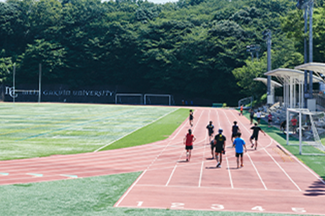

- 入学した理由は？
-
高校時代は文系でしたが、これからの社会は情報分野に将来性があると考え、大学選びの際は情報系の学部を志望しました。その中でも明治学院大学の情報数理学部は数Ⅲを履修していなくても受験できる点に引かれました。また、新設学部の1期生として、何事にも自ら挑戦することが求められる環境の中で積極性を磨けるのではと考えました。
- 入学後に驚いたことは？
-
入学前に想像していた以上に先生方が親身になって授業をしてくれることに驚きました！授業内容は高校と比べてハイレベルですが、学生の理解度をしっかりと考慮して授業を進めてくれますし、顔と名前を覚えてもらえるほど少人数なので質問もしやすく、安心して学べています。
- サークルには入った？
-
情報数理学部の学生を中心に結成され、プログラミングや画像・映像編集などの活動を行うサークル「Tetra（テトラ）」に所属しています。当サークルがオープンキャンパスで情報数理学部を紹介するブース作りを担当することになり、私は情報数理学部の教員14名全員へのインタビューを行い、ポスターにして掲示しました。
- 好きな授業は？
-
プログラムを書く授業が面白く、やりがいを感じています。1年次に「初級プログラミング」という授業で基礎を身に付け、2年次からは「システムプログラミング」という授業でC言語を学んでいます。高校時代は文系でプログラミングの経験はありませんでしたが、今では自分の書いたプログラムが思い通りに動くのを見て、達成感とともに自分の成長を実感しています。
- 部活動はしている？
-
射撃部に所属しています。高校時代は囲碁将棋部でしたが、大学では体育会系の部活に入りたいと思い、調べる中で射撃部の存在を知り、「集中力が鍛えられるのでは」と考えて入部しました。実際、撃つ瞬間は無心になるため、集中力が養われていると感じます。
- 高校生へメッセージを！
-
入学して最初の半年間は、特に数学に関する授業が高校までと比べてかなり高度になるため、大変に感じるかもしれません。しかし、それを乗り越えた先には「数理ってこんなに面白いんだ！」と感動できる、新たな景色が広がります。文系出身でも大丈夫。少人数の学部なので、学生同士で助け合う雰囲気もあります。
- 好きな授業は？
-
「数理と情報」という授業は、情報数理学部の全教員の研究内容をオムニバス形式で学ぶことができて、その多彩さにワクワクします！将来のコースや研究室選択の参考にもなります。「入学してから自分のやりたいことを見つけたい」という人は、この授業が特に役立つはずです。
- 学びを深めていきたいことは？
-
AIによる楽曲制作や仮想ボイス生成について探究したいと考えています。「こんな曲を作りたい」と言えば作ってくれる、そんなAIを実現できたら人々の娯楽はきっとより豊かになりますよね？他学部との連携が充実していて、文学部芸術学科もあることも、私が明治学院大学を志望した理由の一つです。
- 将来の目標は？
-
目指しているのは、音楽関連企業への就職。キャリアサポートが充実していることも明治学院大学の魅力の一つなので、積極的に活用していきたいですね。そして情報数理学部で研究したAI技術を、楽曲制作やマーケティングに生かしたいと考えています。
- 入学した理由は？
-
小さな頃からゲーム機や音楽再生プレーヤーなどの電子機器に触れる中で、「どうしてこんなことが実現できるんだろう」とその仕組みに興味が湧いたことが情報分野を学びたいと思うようになったきっかけ。大学では情報の世界を論理的に深く理解するとともに、好きな数学の側面からも探究したいと考え、情報数理学部を志望しました。
- 他学部の学生との
交流は？ -
私が受講している英語の授業では、他学部の学生と英語で議論します。今は「地域におけるコミュニティの構築」をテーマに議論していて、国際学部や経済学部など、さまざまな学部の学生との意見交換を通して多彩な発想に触れることができ、視野が広がるのを実感しています！
- これからの目標は？
-
「人が主役のAI社会」の実現にどのような形で貢献できるかを追究していきます。そのためには高度な知識・技術に加え、AIに関する倫理的な問題についての視点を身に付けることも重要です。この学部の特長の一つは「文理融合」を重視していること。文系学部の学生とも日頃から交流できる環境を生かし、社会を多角的に見る視点を培い、AIの学びに取り入れていきたいですね。
- 入学した理由は？
-
データサイエンスに興味がありました。明治学院大学を選んだ理由の一つは、国際教育の充実です。グローバルな視点で学ぶことで、情報分野に関する海外の知見も幅広く吸収できると考えました。現在、英語の授業の一つではネイティブの先生による指導のもと、英語で全て会話し、コミュニケーション能力を鍛えています。在学中に情報分野に強い国への長期留学も体験したいですね。
- 情報数理学部の魅力は？
-
情報数理学部は1学年80名という少人数の環境なので、先生との距離が近くて質問もしやすく、手厚い指導を受けることができます。また、新しい学部なので、学生同士に「力を合わせて一緒に成長しよう」「みんなで学部を発展させていこう」という一体感があります。
- 好きな授業は？
-
「基礎数学演習」です。難しい問題が多いですが、その分、解けたときの達成感もとても大きい！解答を導いた過程を教壇で発表する機会もあり、その場で先生からアドバイスを受けられるので勉強になります。また、友達の発表を聞くことで、自分では思いつかなかった解法に気付くことができるのも、この授業の魅力です。
- 授業以外でがんばっていることは？
-
学生と地域の方々が交流する大学祭「戸塚まつり」に、情報数理学部の学生を中心に結成されたサークル「Tetra（テトラ）」のメンバーとして参加しました。先輩が作ったゲームを地域の子どもたちが楽しんでいる様子を見ることができ、うれしかったです！
- 大学で学ぶ数学の
面白さは？ -
数学に関連する授業がたくさんありますが、それぞれまったく新しいことを学ぶのではなく、高校時代に学んだ数学が土台になっていることを実感しています。それらの学びがつながっていくのを感じられるのが面白い！数学好きの人ならきっと楽しく感じられる授業ばかりですよ。
- 情報数理学部の雰囲気は？
-
サークルの先輩や同級生と分からないことを教え合う機会は多く、先生方もとても親身になって教えてくれます。教育理念の“Do for Others（他者への貢献）”を大切にする気持ちをみんなが持っています。後輩ができたら、私が先輩にしてもらったように、相談に乗ってあげたり、仲良くしたいですね。
- 情報数理学部
1・2期生の出身地域 -
2024・2025年に入学した1・2期生は、55%が神奈川県出身。首都圏以外の地域では、東北から九州まで全国から集まっています。
- 明治学院大学の
学生数と男女比 -
男女比は学部ごとに違いますが、全体では女子がやや多い大学です。そのため、情報数理学部は一般的な理系・情報系の学部に比べて、女子の割合が大きい(約3割)のが特徴です。
- 入学した理由は？
-
山口から福岡の高校に進学し、首都圏の大学を目指しました。データサイエンティストの世界に興味を持ち、自分がやりたいことを選択できる3年次のコースやPBLという実践的な学びのカリキュラムがある情報数理学部に惹かれました。明治学院大学には文系学部もたくさんあり、共通科目で経済学や心理学も学べるのが魅力でした。受験は福岡会場と本学の2箇所でチャレンジしました。
- いまのキャンパスライフは？
-
大学は高校に比べて暇なイメージがあったのですが、舞台芸術と弓道の2サークルを掛け持ちしてアルバイトもしているので忙しい毎日。他学部や他大学の学生とのつながりもできました。都会の一人暮らしも思っていた以上に快適で、楽しく充実したキャンパスライフを送っています！
- これからの目標は？
-
私は英語にも積極的に取り組んでTOEICの勉強もしています。英語教育や留学制度も充実している明治学院大学で学ぶことで国際的に活躍できる確かな実力をつけたいです。データを駆使して社会をよりよい方向にもっていくデータサイエンティストを目指します！
- 好きな授業は？
-
「コンピュータとクラウドシステム」の課題を通じて現代のコンピュータシステムやソフトウェアについて深く知ることができました。パソコンで部活の資料を作成する機会があったのですが、以前よりPCもソフトも上手に使いこなせるようになっていました。今までできなかったことができるようになる実感が得られました！
- 授業以外でがんばっていることは？
-
高校から続けてきたラクロス部に入って全国制覇を目指しています。土日を含む週5日の練習があるので学業との両立が大変だけど、メリハリをつけた生活を心がけ、チームの守護神として頼られる全国No.1ゴーリー（ゴールキーパー）になって活躍したいです。

- 学部の魅力は？
-
高校時代より数学の内容は深くなりますが、先生や友達がしっかりサポートしてくれるので文系出身でもがんばればなんとかなります！今後さらに重要になっていくコンピュータをとことん学べるのが情報数理学部。数理の基礎から学べ、専門的な学びへと進めるのでこれからがとても楽しみです。
- 興味深い学びは？
-
使用が制限されている大学もあるChatGPTをあえて使う課題が出ました。テーマは「ChatGPTには解けない問題を考える」。万能なイメージがある生成AIですが、計算の桁を間違えたり、なぞなぞが苦手だったりと、できないこともたくさんあることがわかりました。あまりに楽しく、レポート提出ぎりぎりまでのめり込みました。
- 大学での数学の勉強は？
-
行列の問題はとても面白く、パズルのように解けて、高校では感じられなかった数学の面白さに出会えました。数Ⅲを取っていなかったため、微分積分が必要となる解析学を難しく感じていますが、先生との距離がとても近いので、わからない点もすぐに解決できる安心感があります。

- 将来の目標は？
-
私たちが学ぶ情報数理の世界では、ここ数年で急に注目を集めているChatGPTのように、これまでにない新しいものがどんどん出てきています。私は以前から経営学にも興味がありましたが、経営学に情報の最先端の技術を組み合わせることで、目に見える形で社会に貢献できる“何か”を生み出すのが将来の目標です！
- 興味深い学びは？
-
共通科目の授業の中で「Unity」というプラットフォームと「Blender」という3DCGソフトを使ったゲーム開発を勧められ、3ヶ月ほどで完成・発表することができました。将来やりたいことに直結するような課題だったのでワクワクしながら取り組めました！
- 情報数理学部の魅力は？
-
情報数理学部は少人数なので手厚い指導が受けられ、学びの自由度も高いのが魅力です。難しい課題はみんなで教え合うなど団結力も感じられます。高いモチベーションでプログラムを書きまくるって、超かっこよくないですか!? 新しい校舎で一緒にピコピコやりましょう！
- サークルには
入った？ -
「チェリーズ」というバレーボールサークルに入りました。チェリーズは総勢300人、1年生だけで140人もいるので他学部の友達もたくさんできます。
その一方で、学部の一期生なので先輩がおらず、どこに顔を出してもちょっと浮いてしまいます。後輩にはそんなことが起こらないよう、私たちがしっかりサポートしていきます！
- 情報数理学部の雰囲気は？
-
「真面目でいいやつ」がとても多いです。初日のオリエンテーションで意気投合した友達とカリキュラムの相談をしたり、数学の勉強を教え合ったりしています。テストがあれば点数を競うなど、いいライバル関係を保ちながら切磋琢磨しています。1学年80人なのでみんなと打ち解けられるのも魅力です。
- やってみたいことは？
-
まだほとんど知られていないカードゲームが友人たちの間で話題になっています。情報数理学部で学んだ知識や技術を駆使してスマホアプリにしたりマーケティング戦略を立てたりして、そのカードゲームをバズらせたいです。
- 授業以外でがんばっていることは？
-
大学と地域の方々が交流する「戸塚まつり」の実行委員を務めました。当日はクイズ形式のスタンプラリーイベントを担当し、キャンパス内を走り回りました。他学部の学生や先輩とのつながりも生まれたのでチャレンジしてよかったです！
- やってみたいことは？
-
まだほとんど知られていないカードゲームが友人たちの間で話題になっています。情報数理学部で学んだ知識や技術を駆使してスマホアプリにしたりマーケティング戦略を立てたりして、そのカードゲームをバズらせたいです。
- 情報数理学部１期生の
出身地域 -
2024年に入学した1期生は、半数が神奈川県。首都圏以外の地域では、東北から九州まで全国から集まっています。
- 明治学院大学の
学生数と男女比 -
男女比は学部ごとに違いますが、全体では女子がやや多い大学です。そのため、情報数理学部は一般的な理系・情報系の学部に比べて、女子の割合が大きい(約3割)のが特徴です。